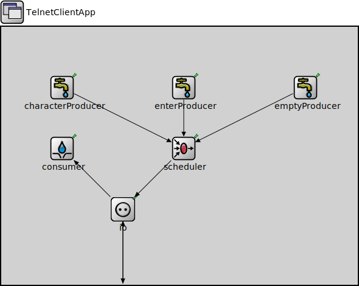

Package: inet.applications.tcpapp
TelnetClientApp
compound moduleThis client application contains a configurable pre-composed telnet traffic source and traffic sink.
<b>See also:</b> ~TelnetServerApp
Usage diagram
The following diagram shows usage relationships between types. Unresolved types are missing from the diagram.
Inheritance diagram
The following diagram shows inheritance relationships for this type. Unresolved types are missing from the diagram.
Properties
| Name | Value | Description |
|---|---|---|
| display | i=block/app |
Gates
| Name | Direction | Size | Description |
|---|---|---|---|
| socketIn | input | ||
| socketOut | output |
Unassigned submodule parameters
| Name | Type | Default value | Description |
|---|---|---|---|
| io.localAddress | string | "" | |
| io.localPort | int | -1 | |
| io.connectAddress | string | ||
| io.connectPort | int |
Source code
// // This client application contains a configurable pre-composed telnet traffic // source and traffic sink. // // @see ~TelnetServerApp // module TelnetClientApp like IApp { parameters: @display("i=block/app"); gates: input socketIn; output socketOut; submodules: characterProducer: <default("ActivePacketSource")> like IActivePacketSource { parameters: packetLength = 1B; packetData = intuniform(97, 122); // lower case ASCII characters productionInterval = uniform(0.1s, 0.2s); // typing speed between 5 and 10 characters per second @display("p=100,100"); } enterProducer: <default("ActivePacketSource")> like IActivePacketSource { parameters: packetLength = 1B; packetData = 13; // enter character productionInterval = 0.1s; @display("p=300,100"); } emptyProducer: <default("EmptyPacketSource")> like IActivePacketSource { parameters: @display("p=500,100"); } scheduler: <default("MarkovScheduler")> like IPacketScheduler { parameters: transitionProbabilities = "0 1 0 0 0 1 1 0 0"; // character -> enter -> wait -> character waitIntervals = "uniform(0,3) 0 uniform(10,30)"; @display("p=300,200"); } consumer: <default("PassivePacketSink")> like IPassivePacketSink { parameters: @display("p=100,200"); } io: TcpClientSocketIo { parameters: @display("p=200,300"); } connections: characterProducer.out --> scheduler.in++; enterProducer.out --> scheduler.in++; emptyProducer.out --> scheduler.in++; scheduler.out --> { @display("m=s"); } --> io.trafficIn; io.trafficOut --> { @display("m=s"); } --> consumer.in; io.socketOut --> { @display("m=s"); } --> socketOut; socketIn --> { @display("m=s"); } --> io.socketIn; }File: src/inet/applications/tcpapp/TelnetClientApp.ned
 This documentation is released under the Creative Commons license
This documentation is released under the Creative Commons license